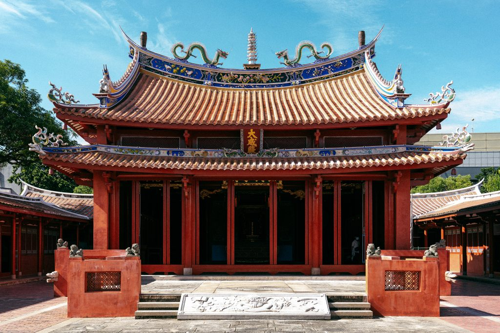

四草綠色隧道

四草綠色隧道位於台南，是台灣著名的生態景點，可以搭乘竹筏欣賞紅樹林美景。
井仔腳瓦盤鹽田

井仔腳瓦盤鹽田擁有悠久歷史，是台灣最古老的鹽田之一，目前為觀光景點，遊客可體驗曬鹽文化。
赤崁樓

赤崁樓建於17世紀，是台南重要的歷史文化遺跡，融合了中西建築風格。
台南孔廟
台南孔廟為台灣最古老的孔廟，建於明鄭時期，是重要的文化與教育中心。
四草綠色隧道位於台南，是台灣著名的生態景點，可以搭乘竹筏欣賞紅樹林美景。
井仔腳瓦盤鹽田擁有悠久歷史，是台灣最古老的鹽田之一，目前為觀光景點，遊客可體驗曬鹽文化。
赤崁樓建於17世紀，是台南重要的歷史文化遺跡，融合了中西建築風格。
台南孔廟為台灣最古老的孔廟，建於明鄭時期，是重要的文化與教育中心。